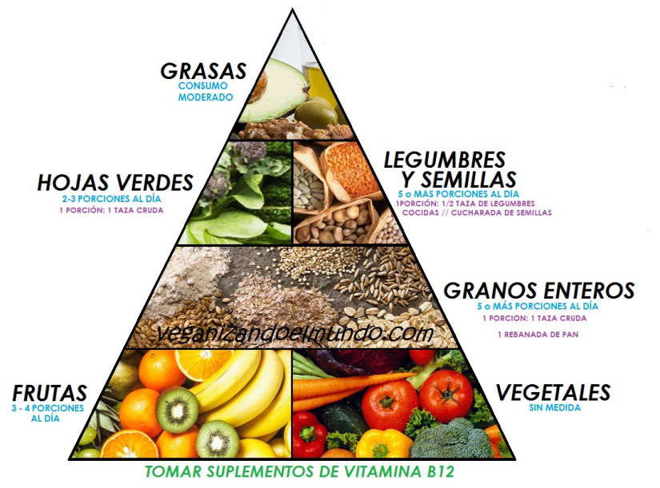
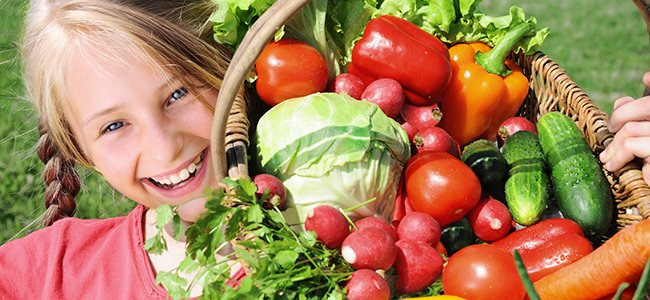

En qué consiste ser vegetarian@?
Un vegetariano es alguien que no come carne, incluyendo aves, carne de res, cerdo o pescado. Los vegetarianos pueden decidir si quieren o no comer otros productos de animales, como los huevos, leche, o miel.
Estos son algunos de los diferentes tipos de vegetarianos:
Flexitarian: Flexitarians son también conocidos como los semi-vegetarianos. La mayoría de las veces ellos evitan productos de animales pero de vez en cuando comen pescado o carne.
Pesci-Vegetariano: Pesci-vegetarianos comen pescado, lácteo y huevos pero no comen carne o aves de corral.
Lacto-Ovo Vegetariano: Una persona que decide comer huevos y productos lácteos se conoce como ovo-lacto vegetariano (‘ovo’ significa huevos y ‘lacto’ significa productos de leche). Este es el tipo más común de las dietas vegetarianas.
Lacto Vegetariano: Lacto vegetarianos no comen carne ni huevos pero comen productos de lácteo.
Ovo Vegetariano: Ovo vegetarianos no comen carne ni lácteos, pero comen huevos.
Vegano: Veganos evitan comer ningún producto de animales. Estas personas no comen ningún producto de carne, leche, queso, huevos, o miel. Muchos veganos, y otros tipos de vegetarianos, deciden no vestirse con ropas que contengan productos como piel, lana o seda. También no se ponen maquillaje que pueden haber sido probado en animales.

¿Por qué la gente decide convertirse en vegetarianos?
La gente decide convertirse en vegetarianos por muchas razones, como la conservación del ambiente, derechos de los animales, o porque creen que seguir una dieta vegetariana es más saludable. Puedes tener una razón diferente pero tú debes decidir por ti misma si estas interesada en seguir este estilo de vida.
Las dietas vegetarianos son saludables?
Las dietas vegetarianos son muy saludables y pueden disminuir el riesgo de enfermedades del corazón, Tipo 2 diabetes y cáncer. Sin embargo comiendo una dieta equilibrado cuando eres vegetarianos requiere un poco más de atención. Como vegetarianos sacan algunas comidas de sus dietas, tienen que trabajar para añadir comidas que le proveerá los alimentos encontrado en productos de carne. Al consumir una variedad de alimentos, incluyendo frutas, vegetales, y granos íntegros tú puedes conseguir las vitaminas y nutrientes que necesitas de alimentos que no provienen de fuente animal. Tú debes asegurarte de consumir suficientes minerales como el hierro y el calcio, y vitaminas D y B12, especialmente si tú sigues una dieta vegetariana completa o veganos.
Los carbohidratos proveen energía y vitaminas para tu cerebro y músculos. Productos de granos especialmente los granos íntegros son muy importante porque proveen los carbohidratos, fibra, y muchas vitaminas que tu cuerpo necesita. Vegetarianos deberían de estar seguro de comer granos íntegros variadas como pan de trigo entero, pasta y tortillas, arroz integral, bulgur y quínoa.
La grasa es necesaria para que tu cuerpo se mantenga saludable. La grasa provee ácidos grasos esenciales y ayuda tu cuerpo absorba algunas vitaminas. Excelente fuentes de grasas saludables incluya nueces o mantequillas de frutas seco, aceite, y aguacate.
La proteína es necesaria para que tus músculos crezcan. Alguien que decida seguir una dieta vegetariana debe estar seguro de que consume suficiente productos altos en proteína. Las nueces, la mantequilla de maní, los productos de soya, y los granos , las legumbres, como los frijoles, guisantes y las lentejas, todos proveen proteína.
El zinc es importante para crecer y para tu sistema inmune. El zinc se encuentra en granos íntegros (granos refinado como pan o pasta hecho de harina blanca no son fuentes de zinc), cereales fortificados, productos lácteos, productos de soya, y legumbres.
El hierro es importante para tu sangre. Se encuentra en los frijoles, semillas, productos de soya, cereales de desayuno, y las hojas de vegetales de color verde oscuro como la espinaca. Hierro basado de plantas es diferente de el hierro encontrado en carne y no es absorbido tanto por tu cuerpo. La vitamina C ayuda a tu cuerpo con la absorción del hierro. Así que es importante comer alimentos altos en vitamina C, como frutas cítricas (naranjas y toronjas) y ciertos vegetales (como el tomate).
El calcio es importante para formar huesos fuertes ahora y más tarde en la vida. El calcio se encuentra en productos lácteos (como la leche, yogur, y queso). Tambien puedes encontrar fuentes de plantas de calcio como broccoli, calabaza, verdes con cuello, frijoles negros, frijoles blancos, soja y tofu. Fuentes de plantas de calcio tienes meno calcio por ración que los productos lácteo y comidas fortalecido. Algunas comidas no son naturalmente alto en calcio pero tienen calcio que son agregados; esta comidas se llaman calcio-fortificado. Algunos productos como leche de soja, leche de arroz enriquecida, jugos de naranja, cereales, y barras de cereales son calcio-fortificado. Miren la información nutrición lable para encontrar cuales marcas son los más altos en calcio.
La vitamina D es importante para absorba el calcio que comes y es necesario para tener huesos fuertes. Puedes conseguir vitamina D de las comidas que come, como productos de lácteo fortificado y leche de soja. Si vives en un citio que el sol no es lo suficientemente fuerte especialmente durante el invierno es más difícil conseguir vitamina D. Para ver si vives en uno de estos sitios, mira el mapa de los Estados Unidos y imagínate una línea atra vez de San Francisco y Philadelphia. Si vives norte de esta línea, es necesario que consigues tu ingesta diaria de la vitamina D por comidas o suplementos.
La vitamina B12 es solamente encontrada en comidas de animales, así que los veganos necesitan comer comidas fortificado con B12.Ejemplos incluyen leche de vacas, huevos, copos de levadura nutricional, leche de soja fortificada y cereales fortificados.
Omega-3 Acidos Grasos son esencial acidos grasos. Veganos o vegetarianos que no comen huevos necesitan incluir otros fuentes. Puedes encontrar omega-3 acidos grasos en nueces, semillas de lino, aceite de canola, soja o tofu.
Yodo es un mineral que ayuda tú el metabolismo de tu cuerpo. Dietas basado de plantas pueden ser bajo en yodo, asi que veganos deberían intentar de usar sal idolatrado en recetes que necesita sal. Alga (el tipo que envuelve sushi) tambien es una buena fuente de yodo.

¿Cómo puedo convencer a mis padres que la dieta vegetariana es saludable y adecuada para mí?
Sus padres quizás están preocupado de que estas eligiendo seguir una dieta vegetariana sin saber cómo hacerlo de una manera saludable. Si tú puedes explicarles a tus padres tus ideas acerca de la dieta vegetariana, tus planes para mantenerte saludable, y las razones para querer convertirte en vegetariana, tus padres estarán más dispuestos a entenderte. Debería darle tiempo para que acepten tu nueva manera de comer. Ofrecerte a ayudarles a hacer el mercado y a cocinar puede ayudarte a ti y a tus padres a entender mejor tus nuevas selecciones de alimentos.
